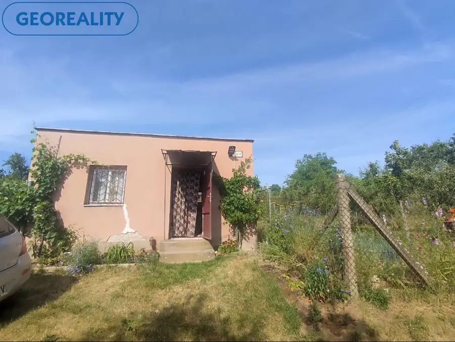
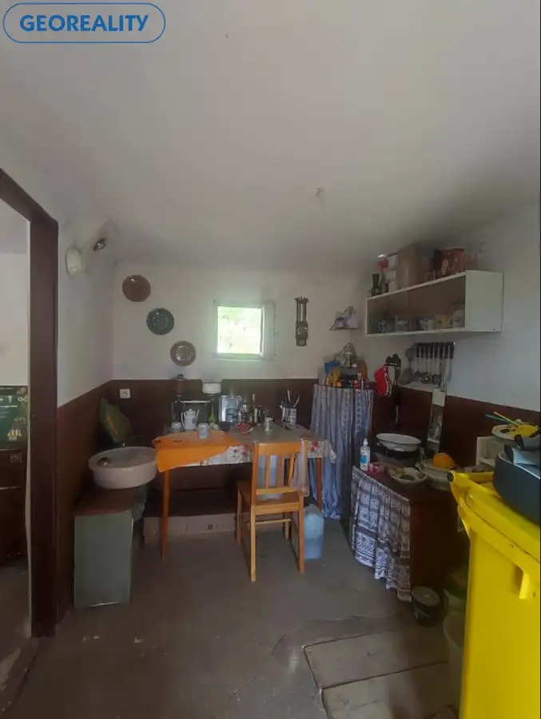
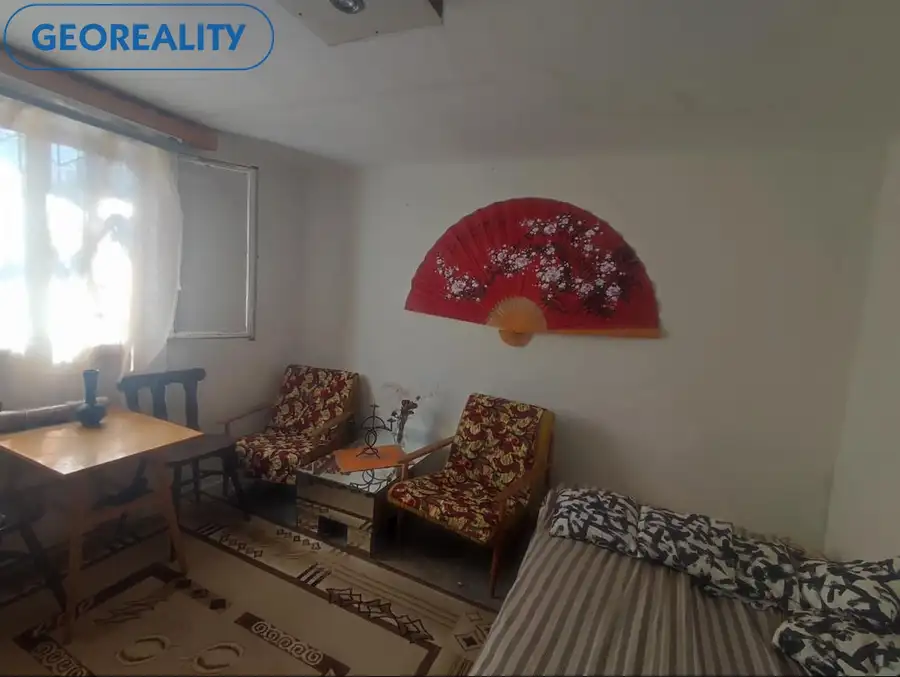
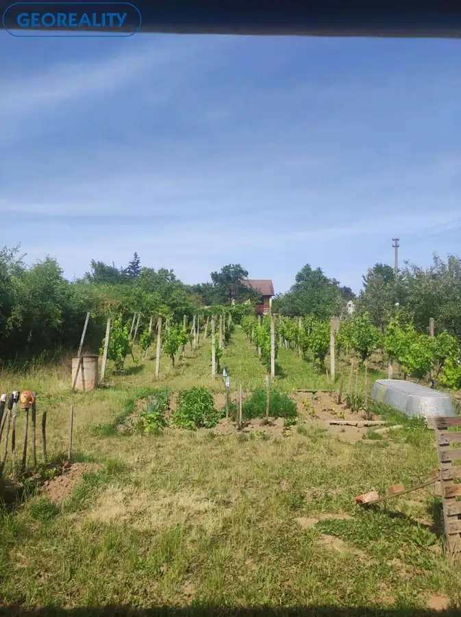
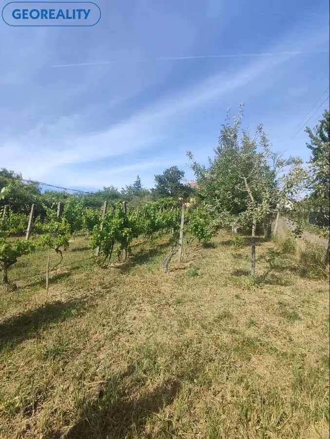
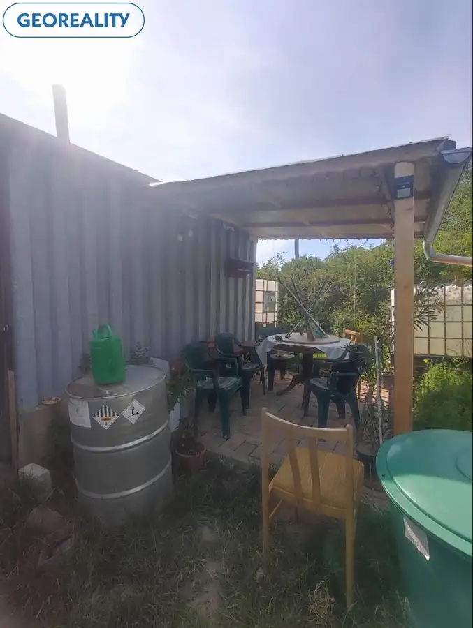

Exkluzívne pozemok s viničným domčekom Levice pod Šiklóšom
Levice






- Plocha976 m²
- StavPôvodný stav
- VlastníctvoOsobné
O nehnuteľnosti
V EXKLUZÍVNOM ZASTÚPENÍ KLIENTA ponúkame na predaj murovaný viničný domček spolu s pozemkom v Leviciach v známej lokalite Staré predné Levice – pod Šiklóšom. Rovinatý pozemok o rozlohe 1 218 m2 je rozdelený na úžitkovú časť, ktorú tvorí vysadená vinica – 976 m2, záhrada na pestovanie zeleniny 213 m2, tiež 29 m2 zastavané plochy a nádvoria, na ktorých leží viničný domček so súpisným číslom.Viničný domček pozostáva z dvoch miestností a priestrannej terasy. Majiteľ má súhlas od Západoslovenskej distribučnej spoločnosti na prípojku elektriny, vzdialenosť stĺpa od viničného domčeka je cca 10 m.Na pozemku sa nachádza malá miestnosť, ktorá sa využíva ako náraďovňa a sklad, 3 zberné nádrže na dažďovú vodu, (sused má vlastnú studňu). V ovocnej záhrade sú rodiace ovocné stromy, jablone, hruška, Prístupová cesta je spevnená a je schodná aj v daždivom, alebo zimnom období. V okolí sú vybudované viničné domčeky, chalupy s celoročným bývaním, nakoľko sa jedná o vyhľadávanú, tichú lokalitu nad mestom.Cena zahŕňa kompletný servis od obhliadok, cez rezervačné zmluvy po vypracovanie kúpnych zmlúv, návrhu na vklad do katastra. NAŠE CENY SÚ VRÁTANE PROVÍZIE A SÚ SCHVÁLENÉ MAJITEĽOM. V prípade záujmu kontaktujte makléra: Anna Jakušíková, tel. 0918 492 691, e-mail: jakusikova@georealitylv.sk. Pozývame vás na IG georealitylv, na našu FB stránku: Georeality Levice - realitná kancelária, kde môžete pozorne sledovať našu každodennú prácu a tiež na: www.georealitylv.sk.
Parametre
- Druh
- Záhradná chatka
- Dátum zverejnenia
- 27. 12. 2025
- Dĺžka pozemku
- 48
- Energetický certifikát budovy
- nie je
- Plocha pozemku
- 1218 m²
- Počet izieb / miestností
- 2
- Počet nadzemných podlaží
- 1
- Prístupová komunikácia
- Kamenitá
- Rok výstavby
- 1995
- Stav nehnuteľnosti
- Pôvodný stav
- Terén pozemku
- Prevažne rovinatý
- Typ
- Predaj
- Typ konštrukcie
- Zmiešaná
- Vlastníctvo
- Osobné
- Vybavenie
- Altánok / posedenie, Záhrada, Záhradný domček
- Vykurovanie
- Lokálne
- Zastavaná plocha
- 29 m²
- Úžitková plocha
- 976 m²
- Šírka pozemku
- 25